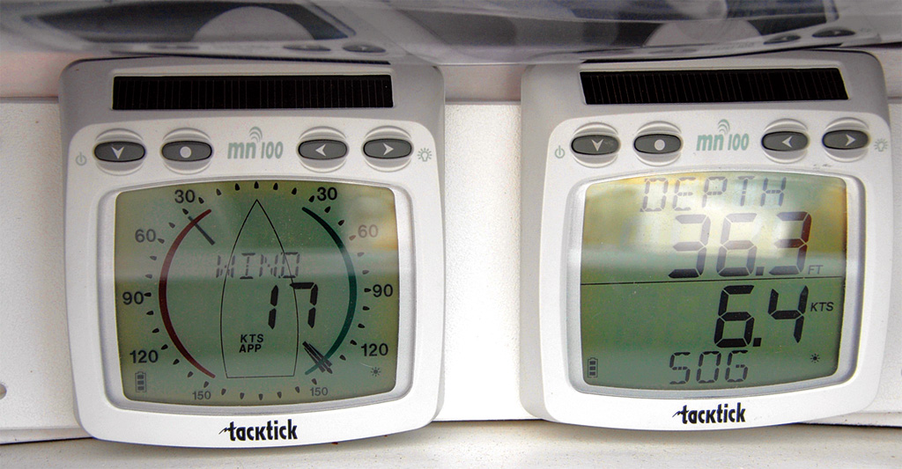
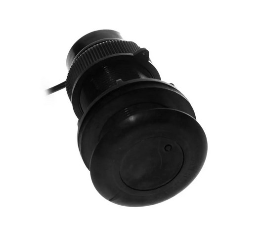
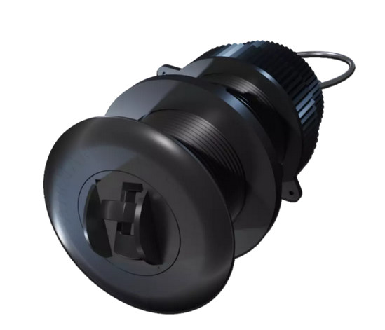
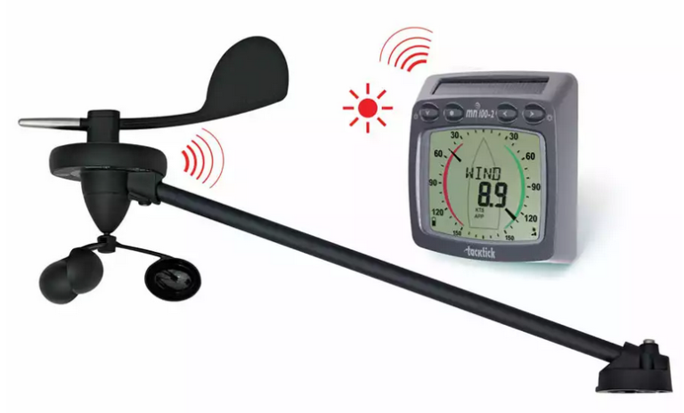
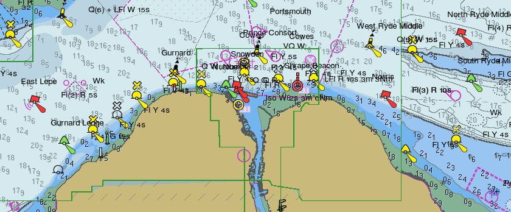

Navigation Overview¶
This is an overview of the software and hardware used for Ariel of Hamble’s Navigation. The term navigation network is used to describe the network that is used to pass data between nodes around the boat, but in reality it is a number of networks. Further data will be provided in a deep-dive section at a future date.
NOTE: Please be aware that some information is measured and some is derived from those measurements. For example, Apparent Wind Speed (AWS) is measured and True Wind Speed (TWS) is calculated from AWS and Speed Through the Water (STW). A problem with a measured value will cause knock-on issues with values derived from it.
TackTicks¶
The TackTick instruments are used to generate depth, speed through the water, water temperature, apparent wind speed and apparent wind direction. The TackTick units use a proprietary radio network called Raymarine Micronet to pass information between the units installed in the navigation cupboard, the wind sensor and the display units.
Display Units¶

Ariel has 3 display units:
1 wind display which can show either apparent wind direction and speed or true wind direction and speed.
2 double number displays which can be configured to show information such as depth, speed through the water, COG and SOG, time, location.
NOTE - please be very careful with the TackTick display units. They are extraordinarily expensive to replace - over £2000 per set.
Depth¶

The depth sounder uses ultrasonic waves to measure the depth beneath the transducer. The offset between the transducer and the bottom of the keel is applied in the Raspberry Pi. The depth sounder also provides the sea water temperature to the network. It connects to the unit in the navigation cupboard using a proprietary wired direct connection.
Speed¶

The speed transducer uses a paddle wheel to measure the speed of the boat throught the water. It connects to the unit in the navigation cupboard using a proprietary wired direct connection.
Wind Speed and Direction¶

The Wind Speed and Direction unit at the top of the mast is solar powered. It transmits the information to the unit in the Navigation locker using a proprietary format called MicroNet.
Interior Temperature, Pressure and Humidity¶
A small PCB in the navigaation cupboard provides Temperature, Pressure and Humidity data to the Rapsberry Pi via a short IIC connection.
EmTrak AIS¶

The EmTrak AIS is a multipurpose device. It is the vessel’s source of location data, it is an AIS class B+ transceiver, sending the boat’s location to other vessels and, when in range, shore stations, it receives the locations of other vessels and it has an inbuilt switch connecting both the internal AIS and the VHF to the mast-head antenna.
To prevent the VHF being powered on and transmitting in to a switched off AIS unit, both the EmTrak and VHF are on the same power switch “VHF”.
The EmTrak AIS uses the GPS antenna on the stern railing.
GNSS Information¶
The EmTrak sends the following GNSS information to the Navigation system:
Location
COG and SOG
Rate of Turn
Time
Number of Satellites
Precision
NOTE: The EmTrak unit uses the US GPS, EU Galileo, Russian Glonass and Chinese Beidou GNSS satellites.
AIS Targets¶
The EmTrak also sends:
Class A Vessel Location
Class B Vessel Location
Class A Vessel Type, Cargo, Destinations etc.
Search and Rescue Aircraft
Aids to Navigation (“Virtual Buoys”)
Safety Messages (MOB devices, SARTs etc.)
Standard Horizon VHF¶

The Standard Horizon VHF uses the GPS signal from the EmTrack AIS unit. The location and time are shown on the front panel LCD of the VHF unit - these are required to make the DSC emergency calling system work.
(The VHF has an in-built VHF too, this is switched off as having multiple GPS locations being added to the network was one of the causes of issues seen in the first season)
The Standard Horizon also sends the location of emergency alerts received to the network so they can be viewed on the OpenCPN chart plotting software.
RaspberryPi¶
Insert Image
The RaspberryPi is the heart of the Navigation System. It is a small, but fully functional, computer system that runs a free specialist operating system called OpenPlotter. Originally designed for school students to be able to own a small, cheap computer - they’re now used in many industrial settings.
In adition to the main computer board, we have added two other specialist boards to the system (known as HATs).
MacArthur HAT - a specialist board produced by the company that creates OpenPlotter - it has inputs and outputs for NMEA 0183, NMEA 2000, NMEA OneNet, SeaTalk etc. plus the ability to interface to industrial sensors. The HAT also allows a safe shutdown of the computer board and has 2 sensors - environmental conditions in the cabin and a 9 degrees of freedom orientation sensor.
SSD Hard Disk board - to allow us to run the software from a proper hard disk, not an SD card.
OpenPlotter¶
OpenPlotter is a Linux-based operating system designed to use a cheap RaspberryPi computer and convert it in to a fully functional plotter system. It uses almost exclusively free, open source, community projects - which means it’s fully tested by a large community, there’s a number of projects around the world which maintain it and increase functionality and there’s a method to request changes.
OpenPlotter provides an interface to all of the standard data formats used by yacht hardware and a number of those used for industrial sensors.
The measured and computed data is collated in a central database by a software package called SignalK, which then makes the values available to other software packages (such as the chart plotter) and over the network for crew to use on their tablets.
OpenPlotter also provides a software chartplotter, weather prediction software, interfaces for autohelms, internet browsing, video viewing and an interface for a range of radio communications (at present we haven’t implemented the radio communications module on Ariel)
Further details on OpenPlotter can be found at the OpenPlotter Website.
SignalK¶
SignalK is software designed to import data from a variety of sources around the boat and store it in a central database which can be accessed by other software. On Ariel, the SignalK servier takes data from a range of inputs such as the NMEA 0143 bus used by the TackTicks and EmTrak, from the barometer and thermometer in the navigation locker and software modules running on the Raspberry Pi and imports them in to the database. SignalK also stores a range of static data in this database which can be used in calculations, e.g. vessel draught.
SignalK stores data addresses and values, for example:
/vessels/<mmsi>/environment/windSpeedTrue 4.23
/vessels/<mmsi>/navigation/position 51.23453,-0.12248,2.34
This database is available to other software to read from - the plotter software, OpenCPN, receives all of its locations details, AIS vessels to overlay, DSC alerts directly from the SignalK database. SignalK also has a number of output plugins so the data is converted back to NMEA 0143 so derived values can be displayed on the TackTicks, to a data stream that can be used by Navionics or similar on member’s phones and tablets and in some cases to files so that trends can be observed (e.g. we’re actively monitoring battery state to see if we can understand better what is causing mysterious battery drainage).
Further details on SignalK can be found at SignalK Website.
OpenCPN¶

OpenCPN is a fully functional chartplotter which can:
Display a wide range of chart formats including those made available for Europe via O-charts
Be used for all electronic chartplotter tasks such as adding routes, waypoints etc
Can display the location of emergency alarm signals such as MOB alarms, DSC safety messages etc.
Can display AIS targets including closest point of approach lines.
Can overlay GRIB weather prediction files
Can display tidal heights and currents, magnetic offsets etc.
Can display Radar overlays.
Can be extended by plugins to do tasks such as Vessel Data Recording.
Further details on OpenCPN can be found at OpenCPN Website
NOTE: OpenCPN is freely available on Windows, Mac, Linux and Android - please download and familiarise yourself - the charts for the entirety of the UK are also available for about £20.
O-Charts¶

O-charts use the latest information from a number of European hydrographic offices to create chart packages specifically designed for OpenCPN. Each purchase is licensed to a USB key that is plugged in to the Raspberry Pi.
The visual design of the charts is fully cusomisable - we have made it look like an Admiralty chart on Ariel - please note that you may need to zoom in on the chart to see all of the information present.
NOTE: without the USB key, the charts will not be displayed.
Each year we purchase the entire UK chart set plus any required for the summer cruise, e.g. Atlantic France. If you are planning on sailing anywhere that could require new charts, please contact the Commodore. Charts can be installed remotely. Charts receive updates every four weeks - again updates can be run remotely.
MOB and Safety Notifications¶
MOB alarms work in a number of different ways. If members wish to use a DSC based MOB alarm the wearer must register the vessel MMSI number with the device. This is usually done via an smart phone app.
The location of MOB and Safery alerts are shown on the chart surrounded by a flashing ragged ‘circle’ and an alarm is sounded.

Dashboard¶
OpenPlotter provides a web-based Dashboard for displaying information stored within the SignalK database. This uses software called KIP. This is accessed using a web browser.
The dashboard has a number of pages:
Sailing data overview - windrose, wind speed, speed, heading, COG, SOG etc.
Location data - location, local time, sunrise and sunset times at this location
Boat data - engine hours, battery status etc.

Custom Software¶
Our custom software uses a number of tools that are built in to the Raspberry Pi’s operating system. The majority use a service called cron which runs a specific programme at a specific time.
Engine Hours¶
The engine hours meter works by sampling the voltage output from the alternator. If a voltage is present, the alternator and engine are running. The total hours value is stored in a text file. Every 3 mins the software checks for the presence of voltage and if present, increments the time stored in the file and sends to new value to the SignalK database.
Offsite Notifier¶
The offsite notifier uses a service called (ntfy.sh) - sending short notifications from the Raspberry Pi which can be read by the Boatswain’s team and committee. To ensure that Skippers and Mates are aware that a notification is running, a short jingle is played. For information on the NTFY channel that you need to subscribe to, please contact the commodore.
Location¶
The location notification checks if the boat is approaching a fixed location and sends a ntfy.sh notification. This is mainly used on the approach to Elephant Boatyard to know when the boatswain’s team can visit the yard to do work.
Sunset¶
The sunset notification lets us know that the navigation system is running at sunset, so we know that a night sail is taking place.
Shutdown Information¶
The offsite notifier to send a set of data when the navigation system is shutdown. This would be used for information important to planning maintenance and spotting early indications of issues. In the initial rollout we’re hoping to send engine hours, battery status and cabin humidity with a hope to add further information such as fridge minimum temperature, engine maximum temperature, bilge water level etc.
Future Projects¶
Better Data Dashboard Access¶
At present the dashboard is only available on the Raspberry Pi at the chart table via a web browser which competes for screen real-estate with the chartplotter. The boatswain’s team has ideas for two projects in the run up to the new season:
Make the KIP dashboard viewable on the local Ariel of Hamble network so that the dashboard can be viewed on a tablet or phone in the cockpit.
Make a small, basic repeater that can be installed near the Raspberry Pi monitor showing only the most important data.
Better Engine Information¶
There is an open source project based on OpenPlotter to interface to a Volvo Penta engine and send data such as RPM, temperature, etc. to the navigation network.
Better Battery Information¶
There have been some reports of batteries misbehaving, so we’re planning on adding battery monitors to both the Engine and House battery banks that will allow us to measure the battery voltage, provide this to the navigation network and graphically interpret the data so we can see if what correlation there is between voltage drop and equipment usage onboard.
To quote the Commodore’s near namesake, William Thomson, Baron Kelvin: “When you can measure what you are speaking about, and express it in numbers, you know something about it; but when you cannot measure it, when you cannot express it in numbers, your knowledge is of a meagre and unsatisfactory kind.”